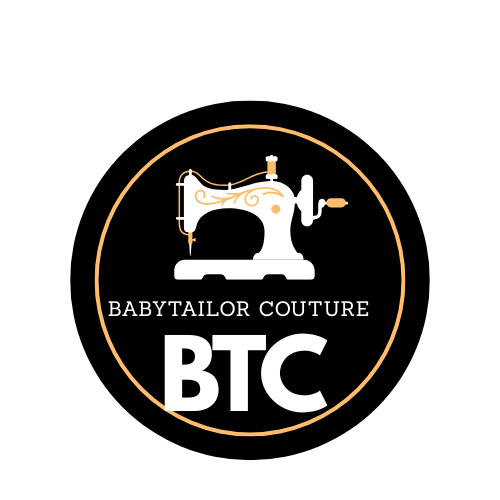

Name: Fashion Hub
Reason: A central hub for learning fashion designing and tailoring skills with tips, guides, and interactive features.
This website introduces basics of fashion designing and tailoring, including: tools and materials, common design styles, step-by-step tailoring process, examples of clothing designs, interactive design inquiry form, dynamic content with JavaScript, and user preferences stored in localStorage.